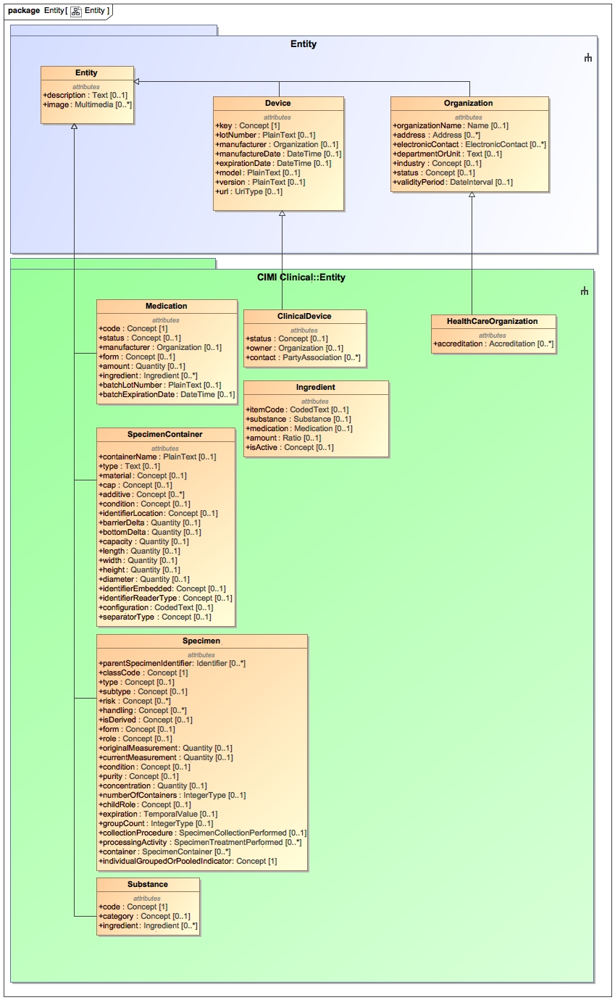
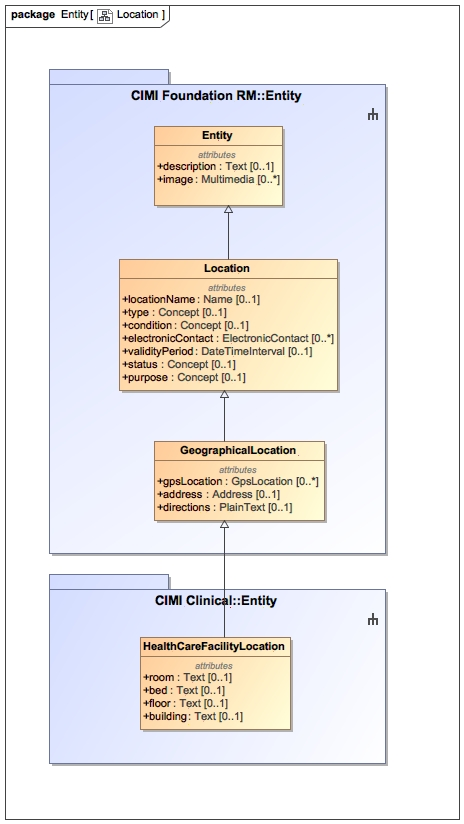

The Entity package contains classes representing CIMI clinical entities and their related structures. Entities may include material entities such as people or medications. They may include other entity types such as organizations. Entities can assume roles and be actors in activities. Entities can be related to other entities generally through the roles they play in a specific scenario - for instance, two people may be related through a patient-provider relationship.

